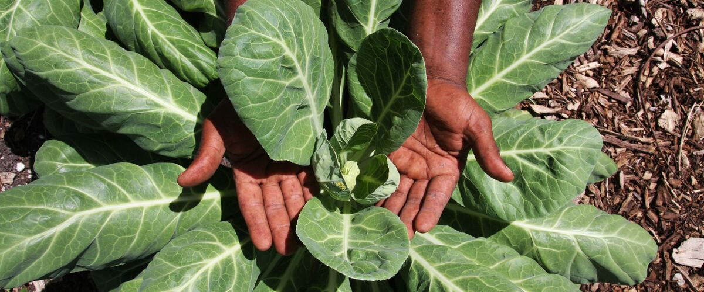

When to plant collards in Leavenworth, WA
Start collards from seed indoors Mar 4–18, then plant the young plants in the garden in Leavenworth Apr 15 – May 27. For a fall harvest, plant again Jul 22 – Aug 5.
- Difficulty
- Easy
- Sun
- Full sun to part shade
- Spacing
- 18 to 24 inches apart
- Planting depth
- Plant starts at the depth they grew in the pot
- Frost
- Handles light frost
- First harvest
- About 60 days after planting
Why these dates
Leavenworth's typical last spring frost is May 10. As a cool-season crop that handles light frost, this crop doesn't need to wait for that date. In the Inland Northwest, though, the soil usually isn't ready to work until about April 15.
Inland Northwest. Higher, colder interior valleys. Cold springs and an earlier fall mean a shorter season; quick-maturing varieties pay off.
How to grow collards in Leavenworth
- Start seeds indoors Mar 4–18 in trays or small pots under a grow light or in your sunniest window. Or skip this step and buy young plants (starts) at a garden center.
- Harden off the young plants: about a week before planting, set them outside for a few hours a day, a little longer each day.
- Plant them in the garden Apr 15 – May 27, 18 to 24 inches apart. Plant starts at the depth they grew in the pot.
- Water deeply once or twice a week rather than a little every day, and mulch once the soil is warm.
- Plant again Jul 22 – Aug 5 for a fall harvest.
- Harvest: Pick the lower leaves when they're about the size of your hand, and let the top keep growing. Leaves picked after a frost taste sweetest.
Key numbers
- 6.0–7.5Soil pH
- 18–24 inchesSpacing
- Down to about 10°FCold hardiness
- Cabbage wormsBiggest risk
Growing notes
What makes the difference in Northwest gardens, in plain language.
Why collards suit Northwest winters
Collards are a loose-leaf member of the cabbage family, very close to kale. They're tougher than most of their cousins: established plants usually ride out freezes into the low teens, and cold weather turns some of the starch in the leaves to sugar, which is why winter collards taste milder and sweeter than summer ones.
West of the Cascades, a planting set out in midsummer gives leaves from fall right through to spring. East of the Cascades, hard winters can kill them, but fall harvests are still excellent.
Soil, feeding and picking
Like all leafy cabbage-family crops, collards want rich soil with plenty of nitrogen and a pH of about 6.0 to 7.5. Mix in compost before planting and side-dress with a balanced fertilizer a month later. Keep the soil evenly moist; stressed plants get tough, bitter leaves.
Pick from the bottom up, taking two or three leaves per plant at a time and leaving the growing tip alone. A well-fed plant keeps making new leaves for months.
Keeping pests off
The white cabbage butterfly lays eggs on the leaves, and the green caterpillars that hatch chew big holes. Aphids cluster under leaves in late summer. Insect netting or row cover laid over hoops from planting day is the simplest fix. Hand-pick any caterpillars you find, and knock aphids off with a strong spray of water.
Don't grow collards in the same spot as kale, cabbage or broccoli two years running. That breaks the cycle of clubroot and other soil diseases the family shares.
Common questions
When is the last frost in Leavenworth, WA?
Typically May 10. In 9 years out of 10, frost is over by May 28. These are 1991–2020 NOAA climate normals for Leavenworth.
Is it too late to plant collards in Leavenworth?
The spring planting window runs through May 27. If you miss it, plant again for fall from July 22 to August 5.
When should I start collards from seed indoors in Leavenworth?
March 4 to March 18, which is 6 to 4 weeks before the April 15 planting date. Or buy young plants at a garden center instead.
What's the difference between collards and kale?
They're the same species with different leaves. Collards have broad, flat, smooth leaves; most kales are curly or crinkled. Collards are a bit more heat-tolerant and slightly milder.
When do collards taste best?
After a few frosts. Cold makes the plant store sugar in its leaves, so fall and winter collards are noticeably sweeter.
Can I grow collards in summer?
Yes, they handle heat better than most cabbage-family greens. In hot eastern valleys, give them afternoon shade and steady water.
Also plant in Leavenworth around the same time
Planting dates for collards in nearby areas
- Wenatchee, WA Apr 1 – May 13
- Omak and Okanogan, WA Apr 15 – May 27
- Chelan, WA Apr 1 – May 13
- Winthrop and Twisp, WA Apr 17 – May 29
- Ellensburg, WA Apr 15 – May 27
- Spokane, WA Apr 15 – May 27
Full planting calendar for Leavenworth · Collards in every city